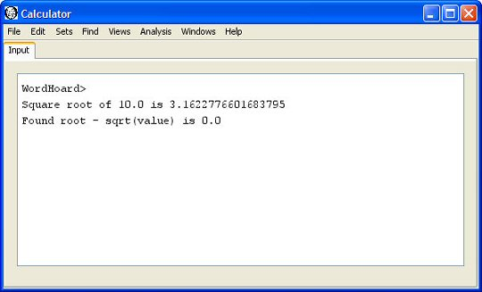

|
|
|
WordHoard's script language provides a number of mathematical methods. These include functions for arithmetic operations, finding the root of a function, and statistical distribution functions.
WordHoard scripting provides many commonly used arithmetic functions.
| result = abs( x ); | Returns the absolute value of x. Example: abs( -10 ) = 10 . |
| result = acos( x ); | Returns the arc cosine of x in the
range 0 through pi. Example: acos( 0.5 ) = 1.0471975511965979 . |
| result = acosh( x ); | Returns the hyperbolic arc cosine of x. Example: acos( 100 ) = 5.298292365610485 . |
| result = areEqual( x , y ); | Returns true if x and y are equal to within
machine tolerance, false if not. Examples: areEqual( 0.0 , 1.0D-12 ) is false. areEqual( 0.0 , 1.0d-18 ) is true. |
| result = areEqual( x , y , tolerance ); | Returns true if x and y are equal to within the
specified tolerance, false if not. Examples: areEqual( 0.0 , 1.0D-5 , 1.0D-6 ) is false. areEqual( 0.0 , 1.0d-9 , 1.0D-6 ) is true. |
| result = asin( x ); | Returns the arc sine of x in the range
-pi/2 through pi/2. Example: asin( 0.5 ) = 0.5235987755982989 . |
| result = asinh( x ); | Returns the hyperbolic arcsine of x. Example: asinh( 0.5 ) = 0.48121182505960347 . |
| result = atan( x ); | Returns the arc tangent of x in the range
-pi/2 through pi/2. Example: atan( 1.0 ) = 0.7853981633974483 . You can determine a good value for pi by computing 4.0 * atan( 1.0 ) = 3.141592653589793 . You can also use Math.PI . |
| result = atan2( y , x ); | Returns the four quadrant
arc tangent of y/x in the range -pi to pi . Example: atan2( .3 , .2 ) = 0.982793723247329 . |
| result = atanh( x ); | Returns the hyperbolic arc tangent of x. Example: atanh( 0.5 ) = 0.5493061443340549 . |
| result = binomial( n , k ); | Returns the binomial coefficient (n;k) whicj is the
number of ways to select k unordered outcomes
from n possibilities. Example: binomial( 5 , 2 ) = 10.0 . |
| result = ceil( x ); | Returns the integral double value closest to negative infinity
that is greater than or equal to x . Example: ceil( 9.6 ) = 10.0 . |
| result = cos( x ); | Returns the cosine of x. Example: cos( 1.0 ) = 0.5403023058681398 . |
| result = cosh( x ); | Returns the hyperbolic cosine of x. Example: cosh( 1.0 ) = 1.543080634815244 . |
| result = cot( x ); | Returns the cotangent of x. Example: cot( 1.0 ) = 0.6420926159343306 . |
| result = exp( x ); | Returns Euler's number e raised to the power x. Example: exp( 1.0 ) = 2.7182818284590455 . which is Euler's number. You can also use Math.E to get the value of Euler's number. |
| result = factorial( x ); | Returns the factorial of x. Example: factorial( 5 ) = 120.0 . |
| result = floor( x ); | Returns the integral double value closest to negative infinity
that is less than or equal to x . Example: ceil( 9.6 ) = 9.0 . |
| result = hypot( x , y ); | Returns sqrt(x*x +y*y) without intermediate overflow or underflow.
Example: hypot( 3 , 5 ) = 5.0 . |
| result = IEEEremainder( x , y ); | Computes the remainder (modulo) operation on the two arguments
as prescribed by the IEEE 754 standard. Example: IEEEremainder( 10 , 3 ) = 1.0 . |
| result = isNegativeZero( x ); | Returns true if x is negative zero. |
| result = log( x ); | Returns the natural logarithm (base e) of x. Example: log( 10 ) = 2.302585092994046 . |
| result = log10( x ); | Returns the base 10 logarithm of x. Example: log10( 100 ) = 2.0 . |
| result = log2( x ); | Returns the base 2 logarithm of x. Example: log2( 4 ) = 2.0 . |
| result = max( x , y ); | Returns the greater of x and y.
Example: max( 2 , 10 ) = 10.0 . |
| result = min( x , y ); | Returns the lesser of x and y.
Example: min( 2 , 10 ) = 2.0 . |
| result = pow( x , y ); | Returns the value of x raised to the power of y.
Example: pow( 2 , 6 ) = 64.0 . |
| result = random(); | Returns a pseudouniform random number with a positive sign, greater than or equal to 0.0 and less than 1.0 . |
| result = rint( x ); | Returns the integral double value that is closest in value to the argument. Examples: rint( 9.6 ) = 10.0 . rint( 9.4 ) = 9.0 . |
| result = round( x ); | Returns the integral double value that is closest in value to the argument. Examples: round( 9.6 ) = 10.0 . round( 9.4 ) = 9.0 . |
| result = safeLog( x ); | Returns the natural logarithm (base e) of x when
x is positive, and zero when x is zero.
Negative values of x return NaN, the standard
IEEE "not a number" value. Examples: safeLog( 10 ) = 2.302585092994046 . safeLog( 0 ) = 0 . safeLog( -1 ) = NaN . |
| result = sign( x , y ); | Returns the value of x with the sign of
y . Examples: sign( 0.5 , 1 ) = 0.5 . sign( 0.5 , -1 ) = -0.5 . |
| result = sin( x ); | Returns the sine of x. Example: sin( 1.0 ) = 0.8414709848078965 . |
| result = sinh( x ); | Returns the hyperbolic sine of x. Example: sinh( 1.0 ) = 1.1752011936438014 . |
| result = sqrt( x ); | Returns the square root of x. Example: sqrt( 2.0 ) = 1.4142135623730951 . |
| result = tan( x ); | Returns the tangent of x. Example: tan( 1.0 ) = 1.5574077246549023 . |
| result = tanh( x ); | Returns the hyperbolic tangent of x. Example: tanh( 1.0 ) = 0.7615941559557649 . |
| result = toDegrees( x ); | Converts an angle x measured in radians
to an approximately equivalent angle measured in degrees.
Example: toDegrees( 1.5707963267948966 ) = 90.0; |
| result = toRadians( x ); | Converts an angle x measured in degrees
to an approximately equivalent angle measured in radians.
Example: toRadians( 90 ) = 1.5707963267948966 . |
| result = trunc( x ); | Returns the nearest integral double value
that is less than or equal to x . Example: trunc( 9.6 ) = 9.0 . |
WordHoard provides Brent's method for finding the zero of a function with a single root. This method is handy when you want to calculate various types of arithmetic or probability distributions not already provided by WordHoard.
| Method | Description |
|---|---|
| root = findroot( lowerBound, upperBound, MonadicFunction function ); | Finds the zero of a function with a single root (or an arbitrary root if the function has more than one). The lowerBound is the minimum value for the root, the upperBound is the maximum value for the root, and MonadicFunction function defines the function whose root we want. |
The MonadicFunction interface requires you to define a single method called f to compute the value of the function whose root you want, given the passed value of x. The value of x is the current approximation to the root of the function. The method f should return 0 when the approximant x matches a root.
The sample script below defines a function to calculate the square root of a given numeric value as "f(x) = x * x - value" where value is the number whose square root you want. We'll try to find the square root of ten as an example. The script prints the square root value obtained by searching for the root as well as the difference between that value and the one calculated by the WordHoard "sqrt" function.
// Value whose square root we want. value = 10.0; // Square root must be between 0 and the value itself. xlo = 0.0; xhi = value; // Find the square root by searching for the root of // the function f(x) = x * x - value. The MonadicFunction // interface defines this function. root = findroot( xlo , xhi , new MonadicFunction() { public double f( double x ) { return x * x - value; } } ); // Display square root found by root search. print( "" ); print( "Square root of " + value + " is " + root ); // Display difference between root and value returned by "sqrt" function. print( "Found root - sqrt(value) is " + ( root - sqrt( value ) ) ); |
Running this script produces the following output:

WordHoard scripting provides methods for computing probabilities and percentage points for common statistical distributions. The methods used are generally accurate to at least ten decimal digits of precision.
| result = chiinverse( p , df ); | Returns the cumulative percentage point of the
chi-square distribution with df degrees of freedom
for the cumulative significance level p. Example: chiiverse( 0.89 , 10 ) = 5.0175884255504055 . |
| result = finverse( p , dfn , dfd ); | Returns the percentage point of the
central F distribution with numerator degrees of freedom dfn,
denominator degrees of freedom dfd, and point probability
level p. Example: finverse( 0.05 , 2, 10 ) = 4.102821015130399 . . |
| result = normalinv( p ); | Returns the cumulative percentage point of the
normal distribution for two-tailed significance level p.
Example: normalinv( 0.975 ) = 1.9599639845400536 . |
| result = sigchi(chi , df ); | Returns the probability for the chi-square
distribution for the
value chi with degrees of freedom
df.
Example: sigchi( 5.0 , 10 ) = 0.8911780189141512 . |
| result = sigf( f , dfn , dfd ); | Returns the probability for Fisher's F distribution for the
value f with numerator degrees of freedom
dfn and denominator degrees of freedom
dfd.
Example: sigf( 4.103 , 2 , 10 ) = 0.049995084647059464 . |
| result = signormal( z ); | Returns the cumulative two-tailed significance level of the normal
distribution for percentage point z. You may double
this for a one-tailed test. Example: signormal( 1.96 ) = 0.9750021048517796. |
| result = sigt( t , df ); | Returns the point probability for Student's t distribution for the
percentage point t with degrees of freedom
df.
Example: sigt( 3.0 , 10 ) = 0.013343655022569595 . |
| result = tinverse( p , df ); | Returns the percentage point of Student's t distribution for the
point probability p with degrees of freedom
df.
Example: tinverse( 0.01 , 10 ) = 3.169272672616949 . |
|
|
|